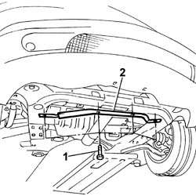
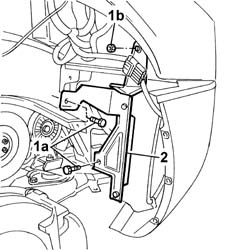
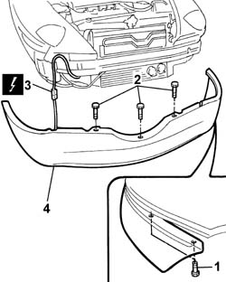

7210E10 FRONT BUMPER
- Path
- Procedures > 72 panels and frames > 7210 REMOVING REFITTING > 7210E EXTERNAL PARTS > 7210E10 FRONT BUMPER
- Kind
- repair procedure (removal / refitting; the operation number is the code)
- Applies to
- all engines; all production periods
- Interactive page
- https://sloeber94.github.io/elrnDB-lThss/en/#/80880
Applies to: all engines; all production periods
 Removing
Removing
 Refitting
Refitting- Position the vehicle on a lift.
See in Op. 7055B54 PROTECTION/GUARD under engine - R.R.
See in Op. 4450B04 Right FRONT WHEEL (one) - R.R.
See in Op. 7055B42 FRONT WHEEL ARCH LINER (one), left or right - R.R.
- < R1 > (right side)
See in Op. 7055B64 Engine compartment DUST SEAL in front wheel arch (one), left or right - R.R.
- < R1 > (right side)
1. Undo the retaining bolts.
2. Remove the bumper reinforcement bracket.

Applies to: all engines; all production periods
1. Undo the fixing bolts (1a) and the nut (1b).
2. Release the headlamp washer fluid reservoir from the housing in order to be able to gain easy access to the bolts fixing the bumper.

Applies to: all engines; all production periods
1. Undo the bolts fixing the bumper to the left and right front wings.
2. Undo the bolts securing the bumper to the lower crossmember.
3. Disconnect the electrical connection for the fog lights.
 | Description | Connector |
|---|---|---|
. | Front/bumper coupling | D013 |
4. Remove the front bumper.

Applies to: all engines; all production periods
Refitting
Removing- Check that the bumper is not damaged.
- Position the bumper and connect the fog lights connector.
| Description | Connector |
|---|---|---|
. | Front/bumper coupling | D013 |
- Tighten the bolts fixing the bumper to the lower crossmember and to the left and right wings.
- Place the headlamp washer fluid reservoir in position and secure it using the bolts and the nut.
- Fit the bumper mounting bracket and tighten the fixing bolts.
See in Op. 7055B64 Engine compartment DUST SEAL in front wheel arch (one), left or right - R.R.
- < R1 > (right side)
See in Op. 7055B42 FRONT WHEEL ARCH LINER (one), left or right - R.R.
- < R1 > (right side)
See in Op. 4450B04 Right FRONT WHEEL (one) - R.R.
See in Op. 7055B54 PROTECTION/GUARD under engine - R.R.
- Remove the vehicle from the lift.
Topics linked from this page (4)
- 4450B04 Right FRONT WHEEL (one) - R.R.
- 7055B42 FRONT WHEEL ARCH LINER (one), left or right - R.R.
- 7055B54 PROTECTION/GUARD under engine - R.R.
- 7055B64 Engine compartment DUST SEAL in front wheel arch (one), left or right - R.R.
Topics that link to this page (26)
- 1004B10 POWER UNIT with manual gearbox - R.R.
- 1004B17 POWER UNIT with automatic transmission, complete with support frame, front suspension- R.R. for versions with air conditioning
- 1004B10 POWER UNIT with manual gearbox - R.R.
- 1020D26 Flywheel side oil seal COVER - R.R. and Replace seals
- 1024B20 ENGINE FLYWHEEL - R&R for versions with automatic transmission
- 1048B14 air delivery pipe between turbo charger and heat exchanger - replace
- 1048B20 Air supply HOSE from heat exchanger to rigid pipe -Replace
- 1048B50 Air/air HEAT EXCHANGER - R.R.
- 1048B14 air delivery pipe between turbo charger and heat exchanger - replace
- 1048B50 Air/air HEAT EXCHANGER - R.R.
- 1048B14 air delivery pipe between turbo charger and heat exchanger - replace
- 1048B20 Air supply HOSE from heat exchanger to rigid pipe -Replace
- 1048B50 Air/air HEAT EXCHANGER - R.R.
- 1084B16 ENGINE OIL PUMP - R.R. FOR VEHICLES WITH AIR CONDITIONING
- 1088B20 Engine cooling RADIATOR - R.R.
- 1088B20 Engine cooling RADIATOR - R.R.
- 2130A10 AUTOMATIC TRANSMISSION - R.R.
- 2130B12 Automatic transmission TORQUE CONVERTER - R.R.
- 4410D10 Front suspension FRAME - R.R.
- 5040A40 Air conditioner CONDENSER - R.R.
- 5050A10 Windscreen washer fluid RESERVOIR (in engine compartment) R.R.
- 5050B20 windscreen washer electrical pump - r+r
- 5050D08 Headlamp washer JET(S) - R.R.
- 5050D20 headlamp washer pump - r+r
- 5580A74 RADAR UNIT for ADAPTIVE CRUISE CONTROL (A.C.C.) - R.R.
- 5580A84 RADAR UNIT for ADAPTIVE CRUISE CONTROL (A.C.C.) - Second level alignment